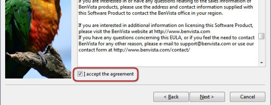

Instalación en Windows
Para instalar PhotoZoom Pro 5, ejecuta el archivo de Instalación o inserta el CD. Si tu unidad de disco tiene desactivada la reprodución automática, abre el disco y ejecuta el archivo de Instalación manualmente.
Después de leer el acuerdo de licencia, selecciona la opción "Acepto el acuerdo de licencia" para activar el botón "Siguiente":

Durante la instalación puedes personalizar dónde y cómo se instalará PhotoZoom Pro 5 en tu sistema. Sin embargo, no es necesario cambiar las opciones por defecto de la instalación, simplemente sigue las ventanas haciendo click en "Next" y luego en "Terminar" para hacerlo.
Una vez finalizada la instalación, inicia PhotoZoom Pro 5 haciendo doble click en el icono del escritorio o en el del menú de inicio:

Los plug-ins de Adobe® Photoshop® (Automatización y Exportación)
Aparte de poder ejecutarse como una aplicación independiente, PhotoZoom Pro 5 puede usarse como plug-in de Automatización y Exportación de Adobe Photoshop. Los plug-ins sólo se instalarán si Photoshop ya está instalado en tu equipo cuando vayas a instalar PhotoZoom Pro 5. El instalador detectará automáticamente dónde ha de instalar los plug-ins. También podrás especificar una carpeta personalizada en la que instalar los plug-ins, pero asegúrate de que Photoshop está configurado para que explore la misma en busca de plug-ins.
Una vez que hayas instalado los plug-ins, PhotoZoom Pro 5 aparecerá en Photoshop en el menú "Archivo" > "Automatizar" y en el menú "Archivo" > "Exportar". Tendrás que reiniciar Photoshop para asegurarte de que reconoce los plug-ins.
Otros programas
En Adobe® Photoshop® Elements, el plug-in de Automatización se encuentra en "Archivo" > "Herramientas de Automatización" o en "Archivo" > "Automatizar", dependiendo de la versión que uses. El plug-in de Exportación está en "Archivo" > "Exportar".
En Corel® PHOTO-PAINT, el plugín de Exportación está en "Archivo" > "Plug-ins de formato de archivo" > "Exportar".
En Corel® PaintShop Pro (Photo), el plug-in de Exportación está en "Archivo" > "Exportar"> "Plugins".
 PhotoZoom Pro 5 puede ser usado como un plug-in en varios programas. Lee los requisitos del sistema para una visión completa.
PhotoZoom Pro 5 puede ser usado como un plug-in en varios programas. Lee los requisitos del sistema para una visión completa.